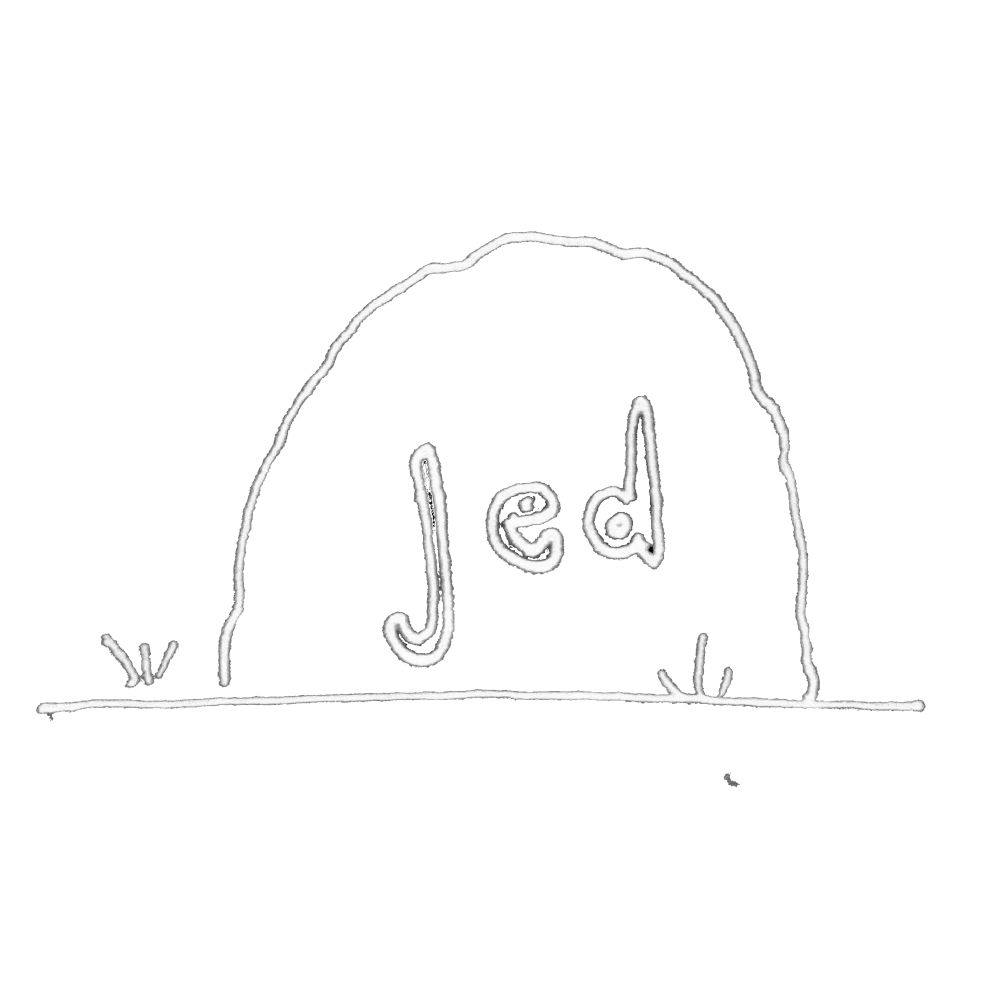

work
- all
- word
- sound
- concept
- code
AM
sound-poem-static
dynalist css
minimalist dark css theme for dynalist

place elegy
ghosts / sound-poem

six poems
ekphrasis / isolation / freedom [@ the plum creek review]

what i've done
it's what i've done. you'll get it [+ the self-prescribing doctors union]

language, music, and parasitic mysteries
comparing boulez & mallarmé with michel serres' "le parasite" [@ oberlin research symposium]

lipolator
complex word searches

letters to jed
elegy for jed deppman, founder of comp lit at oberlin [@ two groves review]

flop&pop
easy & powerful task manager
reclaiming space
gilman, ferrante, cixous/clément, & feminist psychosis [@ johns hopkins macksey journal]

tonalitytool
multitool for advanced tonal analysis